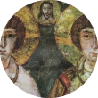
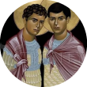
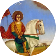
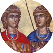

La historia

Sergio y Baco fueron militares romanos, vivieron en el año 325.

Se unierón en un ritual de hermandad asumiendo un vinculo afectivo llamado Adelfopoiesis.

En esta epoca el cristianismo era perseguido por los romanos, y Sergio y Baco profesaban su fe a escondidas.

Durante un viaje rechazaron participar a un ofrenda al rey Jupiter, y eso los delató.

Ambos fueron torturados. Baco murio y dias despues Sergio fue decapitado.